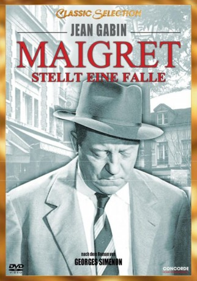

#7904 Kommissar Maigret stellt eine Falle
Alternativ: Inspector Maigret (Englischer Titel)
 
 IMDB-Wertung: 7.3 / 10
IMDB-Wertung: 7.3 / 10  Metascore: 0
Metascore: 0 
Eine Musikerin wurde ermordet, der Täter hat ihre Kleidung mit einem Messer zerfetzt - es ist der vierte Mord dieser Art in Paris. Zeit für Maigret (Jean Gabin), sich etwas auszudenken: Ein kleiner Ganove wird als angeblicher Täter festgenommen. Lässt sich so der echte Mörder locken?
Jahr: 1958
Dauer: 119 Minuten
FSK: 12
Land: Frankreich Studio: J. Arthur Rank FilmTonspuren:
Untertitel: Deutsch,
Auflösung: 1080p (1440x1080) Größe: 6717 MB
Genre: Drama, Krimi
Regisseur: Jean Delannoy
Drehbuch: Georges Simenon
Soundtrack: Paul Misraki
Darsteller:
 Jean Gabin als Le commissaire divisionnaire Jules Maigret
Jean Gabin als Le commissaire divisionnaire Jules Maigret Annie Girardot als Yvonne Maurin
Annie Girardot als Yvonne Maurin- Jean Debucourt als Camille Guimard - le directeur de la Police Judiciaire (as sociétaire de la Comédie Française)
 Paulette Dubost als Mauricette Barberot
Paulette Dubost als Mauricette Barberot Lino Ventura als Insp. Torrence
Lino Ventura als Insp. Torrence Dominique Davray als Marguerite Juteau
Dominique Davray als Marguerite Juteau- Georges Lannes als Maître Lieutard
- Jean Desailly als Marcel Maurin
- Geymond Vital als Un journaliste (uncredited)
- Olivier Hussenot als Lagrume
- Jeanne Boitel als Louise Maigret
- Lucienne Bogaert als Mme Veuve Adèle Maurin
- Guy Decomble als Mazet
- Jacques Hilling als Le médecin légiste
- Hubert de Lapparent als Le juge Coméliau
- Jean-Louis Le Goff als Goudier (as de la Comédie Française)
- Pierre-Louis als Rougin - un journaliste
- Gérard Séty als Georges Jojo Vacher
- Jean Tissier als Le journaliste de Paris-Presse
- André Valmy als L' inspecteur Lucas
- Amédée als L' inspecteur Alfonsi
- Louis Bugette als Simoni, un policier du commissariat du 4ème arrondissement
- Charles Bouillaud als L'inspecteur suppléant Monclare
- Nadine Basile als L'assistante de police
- Raphaël Patorni als Janvier
- Maurice Sarfati als L'inspecteur Lapointe
- Madeleine Barbulée als La cliente de la boucherie
- Jacques Ciron als Le réceptionniste de l'Hôtel de l'Etoile
- Denise Clair als La concierge
- Georges Lycan als Un inspecteur
- Germaine Michel als La voisine de Marguerite Juteau
- Georges Moncorbier als
- Michèle Nadal als Une journaliste
- Dominique Page als La bonne des Maurin
- Nicolas Amato als Le standardiste (uncredited)
- France Asselin als Une auxiliaire de police (uncredited)
- Gaby Basset als Une bonne (uncredited)
- Florence Brière als Madame pipi (uncredited)
- Denise Carvenne als Une auxiliaire de police (uncredited)
- Henri Coutet als Un serveur (uncredited)
- Gérard Darrieu als Un serveur (uncredited)
- Pierre Duncan als Un agent (uncredited)
 Daniel Emilfork als Manic (uncredited)
Daniel Emilfork als Manic (uncredited)- Claude Mercutio als Petit rôle (uncredited)
- Marie Mergey als La dactylo de la P.J. (uncredited)
- Albert Michel als Le gardien de prison (uncredited)
- Pierre Moncorbier als Le photographe (uncredited)
- Albert Médina als L'employé du magasin de confection (uncredited)
- Maryse Paillet als Mme Barberot - la bouchère (uncredited)
- Louis Saintève als Un passant (uncredited)
Datei: X:\4-Tetralogie(A-K)\Kommissar Maigret\Kommissar Maigret stellt eine Falle (1958, FSK12, 1440x1080).mkv seit 06.01.2018
Festplatte: HD Collection-3(N-Z)-6(A-Z)
 Es gibt insgesamt 7 Filme in der Gruppe '4-Tetralogie(A-K)\Kommissar Maigret'
Es gibt insgesamt 7 Filme in der Gruppe '4-Tetralogie(A-K)\Kommissar Maigret'